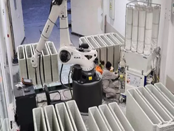

10. FER - Engineering Economics#
Course Website
Readings/References#
Videos#
FE Exam Eng. Economics - Capitalized Cost & Interest Rate (i)
2023 FE Exam Review (Civil)| Engineering Economics| Time Value Of Money | (Problem and Solution)
Tip
The code fragment below is inserted to left-justify tables.
%%html
<style>
table {margin-left: 0 !important;}
</style>
FE-Review-Economics 1.#
A company can manufacture a product using hand tools. Costs are \(\$1,000\) for the tools, and \(\$1.50\) manufacturing cost per unit. An alternative automated system is \(\$15,000\) for the machine, and \(\$0.50\) manufacturing cost per unit. The anticipated annual sales (the required production) is 5,000 units. What is the breakeven time in years for the automated system ignoring interest, versus using live humans?
A) 2.8
B) 3.6
C) 15.0
D) never
Solution (approach)
Compute cost to produce 5000 units per year by each method. Ratio of added investment to annual cost savings is payback time.
Manual production \(\$1.50*5000 = \$7,500\)
Machine production \(\$0.50*5000 = \$2,500\)
Annual savings \(\$7,500 - \$2,500 = \$5,000\)
Added investment \(\$15,000 - \$1,000 = \$14,000\)
Payback time \(\frac{\$14,000}{\$5,000/yr} = 2.8~\text{years}\)
Or compute cost to produce 5000 units per year by each method choose time when machine costs are less than human costs.
import matplotlib.pyplot as plt
# Given data
machine_cost = 15000
cpu_machine = 0.50
hand_tools = 1000
cpu_hand = 1.50
units = 5000
# Initialize cost lists for 15 years
annual_cost_machine = [0] * 15
accum_cost_machine = [0] * 15
annual_cost_hand = [0] * 15
accum_cost_hand = [0] * 15
years = [0] * 15
# Year 0 costs
annual_cost_machine[0] = machine_cost + cpu_machine * units
annual_cost_hand[0] = hand_tools + cpu_hand * units
accum_cost_machine[0] = annual_cost_machine[0]
accum_cost_hand[0] = annual_cost_hand[0]
# Compute costs for years 1 to 14
for year in range(1, 15):
annual_cost_machine[year] = cpu_machine * units
annual_cost_hand[year] = cpu_hand * units
accum_cost_machine[year] = accum_cost_machine[year - 1] + annual_cost_machine[year]
accum_cost_hand[year] = accum_cost_hand[year - 1] + annual_cost_hand[year]
# Print table with column labels
#print(f"{'Year':<5} {'Automated Cost':<15} {'Manual Cost'}")
for year in range(0, 15):
years[year]=year+1
# print(f"{year+1:<5} {accum_cost_machine[year]:<15.2f} {accum_cost_hand[year]:.2f}")
# Plot accumulated costs
plt.figure(figsize=(8, 6))
plt.plot(years, accum_cost_machine, marker='o', linestyle='-', label="Automated Cost")
plt.plot(years, accum_cost_hand, marker='s', linestyle='-', label="Manual Cost")
plt.xlabel("Year")
plt.ylabel("Accumulated Cost ($)")
plt.title("Accumulated Cost Over Time: Automated vs. Manual")
plt.legend()
plt.grid(True)
plt.show()
The cross over occurs between year 2 and 3, closer to 3 - choose A
FE-Review-Economics 2.#

The 3-D concrete printer costs \(\$90,000\) Its salvage value after 5 years is \(\$30,000\). Annual PMCS (Preventive Maintenance Checks and Services) is \(\$5000\). If the interest rate is \(8\%\), the equivalent uniform annual cost is most nearly
A) \(\$22,400\)
B) \(\$30,000\)
C) \(\$32,700\)
D) \(\$35,000\)
Solution (approach)
The formula to convert an initial cost (\(C_0\)) into an equivalent annualized cost stream (\(A\)) over \(n\) years at an interest rate \(r\) (expressed as a decimal) is based on the capital recovery factor:
\(A=C_0 \times \frac{r(1+r)^n}{(1+r)^{n}−1}\)
where,\(A\) = Equivalent annualized cost (constant annual payment)
\(C_0\) = Initial cost (one-time upfront investment)
\(r\) = Interest rate per period (decimal form, i.e., 5% → 0.05)
\(n\) = Number of years (or periods)
This formula is derived from the present worth to annuity conversion in financial mathematics, assuming payments are made at the end of each period.
Modification to consider salvage value and annual PMCS is obtained by discounting the salvage value to the present and subtracting its annuitized value then adding the annual PMCS (O&M) to obtain
\(A=C_0 \times \frac{r(1+r)^n}{(1+r)^{n}−1} - S \times \frac{r}{(1+r)^{n}−1} + O\)
where,\(A\) = Equivalent annualized cost (constant annual payment)
\(C_0\) = Initial cost (one-time upfront investment)
\(r\) = Interest rate per period (decimal form, i.e., 5% → 0.05)
\(n\) = Number of years (or periods)
\(S\) = Salvage value at the end of nn years
\(O\) = Annual operation & maintenance cost
A python script to illustrate the calculations is below
import numpy as np
def compute_annualized_cost(C0, r, n, S, O):
"""
Compute the annualized cost of an investment considering:
- Initial cost (C0)
- Interest rate (r)
- Number of years (n)
- Salvage value (S) at year n
- Annual operation & maintenance cost (O)
"""
# Convert interest rate to decimal if given as percentage
r = r / 100
# Capital recovery factor
CRF = (r * (1 + r)**n) / ((1 + r)**n - 1)
# Present worth factor for salvage value
PW_S = S * (r / ((1 + r)**n - 1))
# Annualized cost calculation
A = (C0 * CRF) - PW_S + O
return A
# Example Inputs
initial_cost = 90000 # Initial investment cost ($)
interest_rate = 8 # Interest rate (% per year)
years = 5 # Lifetime of the equipment (years)
salvage_value = 30000 # Expected resale or salvage value at year n ($)
annual_OandM = 5000 # Annual operation and maintenance cost ($)
# Compute annualized cost
annualized_cost = compute_annualized_cost(initial_cost, interest_rate, years, salvage_value, annual_OandM)
# Print result
print(f"Annualized Cost: ${annualized_cost:.2f} per year")
Annualized Cost: $22427.39 per year
The computed result is close to \(\$22,400\) - choose A
3. FE-Review-Economics: Monthly Payment on a Loan#
A company borrows $150,000 today at 6% nominal annual interest. The monthly payment of a 5-year loan is most nearly:
What Are We Being Asked?#
We’re looking for the monthly payment (A) on a monthly-compounded loan.
Step-by-Step Breakdown#
Identify the Parameters:
Present value (P) = \(\$150,000\)
Nominal annual interest = \(6\%\)
Monthly interest rate \(i=\frac{6\%}{12mo.}=0.5\%=0.005\)
Total number of months \(n=5×12=60\)
Apply Loan Payment Formula \(A=P⋅\frac{i(1+i)^n}{(1+i)^{n}-1}\)
Plug in:
\(A=\$150,000⋅\frac{0.005(1+0.005)^{60}}{(1+0.005)^{60}-1}=~\approx \$2,901\)
Final Answer:#
Monthly payment \(≈ \$2,900\)
Check Your Understanding:#
What would happen to the payment if the term were 10 years?
Recalculate using a 4% interest rate. How much does the monthly cost change?
4. FE-Review-Economics: Equivalent Uniform Annual Cost of a Tractor#
A tractor costs \(\$6,000\). After 8 years it has a salvage value of \(\$4,000\). Maintenance costs are \(\$250\) per year. If the interest rate is 6%, the equivalent uniform annual cost (EUAC) is most nearly:
What Are We Being Asked?#
We want the Equivalent Uniform Annual Cost (EUAC) — a way to express all the costs of owning the tractor as an equal yearly amount over its useful life.
Step-by-Step Breakdown#
Understand the Components
We have:
Initial cost (P) = \(\$6,000\)
Salvage value (F) = \(\$4,000\) (received at end of 8 years)
Maintenance cost (\(A_M\)) = $250/year
Interest rate (i) = 6% (as a decimal: 0.06)
Life (n) = 8 years
We’ll calculate the EUAC as:
EUAC=Capital Recovery Cost+Annual Maintenance Cost
Compute the Capital Recovery Cost
Capital Recovery Cost is the equivalent annual cost of buying the equipment and getting back the salvage value:
Capital Recovery=\(P(A/P,i,n)−F(A/F,i,n)\)
Use standard engineering economy factors (NCEES lookup, or the actual formulas):
\((A/P,6\%,8)=0.162745\)
\((A/F,6\%,8)=0.093573\)
Capital Recovery=\(\$6000×0.162745−\$4000×0.093573 =\$976.47−\$374.29=\$602.18\)
Add the Annual Maintenance Cost
\(EUAC=\$602.18+\$250=\$852.18\)
Final Answer:#
About $852 per year
Check Your Understanding#
What would happen to the EUAC if the salvage value was $0?
How does a longer life span affect EUAC?
Try this: Replace the interest rate with 4% and recalculate.
5. FE-Review-Economics: Present Worth Comparison of Equipment#
You must choose between four pieces of equipment, each with an 8-year life. Costs and salvage values differ. The discount rate is 10%. Which two are best, and what is the difference in present worth?
What Are We Being Asked?#
We must:
Calculate present worth (PW) for each option using cost and salvage values.
Compare them and find the two lowest-cost options.
Step-by-Step Breakdown#
Example Table:
Equipment |
Initial Cost |
Salvage Value |
Life (years) |
i (%) |
|---|---|---|---|---|
A |
$10,000 |
$2,000 |
8 |
10 |
B |
$11,000 |
$2,500 |
8 |
10 |
C |
$9,000 |
$1,000 |
8 |
10 |
D |
$12,000 |
$4,000 |
8 |
10 |
(You can replace this table with your real values later.)
Formula for Present Worth:
\(PW=−P+F⋅(P/F,i,n)\)
Where
\((P/F,10\%,8)\)=\(0.4665\)
Example for Equipment A:
\(PW=−10,000+2,000⋅0.4665=−10,000+933=−9,067\)
Do this for each, compare.
Compare Results
Suppose:
\(A = -9,067\)
\(B = -8,833\)
\(C = -8,534\)
\(D = -9,134\)
Then the two best are:
\(C (-8,534)\)
\(B (-8,833)\)
Difference = \(299\)
Final Answer:#
C and B; difference \(\approx~299\)
Check Your Understanding:#
If interest rate dropped to 6%, would C still be best?
What if Equipment A had no salvage value?
6. FE-Review-Economics: Risk Analysis – Insurance vs. No Insurance#
A construction company bought a new rubber-tire loader for \(\$100,000\) and is evaluating whether to buy insurance. The insurance premium is \(\$2,000\)/year with a \(\$1,000\) deductible. The probability breakdown:
0.85 → No accident
0.12 → Minor accident costing \(\$800\)
0.03 → Total loss of \(\$100,000\)
What is the better financial option — purchase insurance or self-insure — and what are the projected cost savings?
What Are We Being Asked?#
We need to compare the expected annual cost of:
Option 1: Buying insurance (fixed cost + deductibles for minor/total loss),
Option 2: No insurance (pay all damages out of pocket),
Then determine which is cheaper on average, and by how much.
Step-by-Step Breakdown#
Option 1: Buy Insurance
Fixed cost: \(\$2,000\) premium.
If a small accident occurs: company pays \(\$800\), but that’s less than the \(\$1,000\) deductible → insurance pays \(\$0\).
If a total loss occurs: company pays \(\$1,000\) deductible, insurance covers the rest.
So:
Expected cost (insured)=\((0.85)⋅2000+(0.12)⋅(2000+800)+(0.03)⋅(2000+1000) =1700+336+90=\$2,126\)
Option 2: No Insurance
No premium paid.
Pay full $800 if minor accident.
Pay full $100,000 if total loss.
Expected cost (uninsured)=\((0.85)⋅0+(0.12)⋅800+(0.03)⋅100,000 =0+96+3,000=3,096\)
Compare Options:
With insurance: $2,126
Without insurance: $3,096
Projected savings: \(\$3,096−\$2,126=\$970\)
Final Answer:#
Purchase insurance; projected savings \(\approx~ \$970\) per year
Check Your Understanding#
What if the deductible were $5,000 instead?
Would the decision change if the probability of total loss rose to 5%?
Could this risk model apply to leasing equipment instead of owning?
7. FE-Review-Economics: Payback Period for Automation Investment#
A company can manufacture a product using hand tools. Tools cost \(1,500, and the cost per unit is \)1.75. An automated system costs \(17,500 with cost per unit of \)0.75. With annual volume of 3,000 units and ignoring interest, the payback period is most nearly:
What Are We Being Asked?#
We want to know how many years it takes for the cost savings from automation to recover the initial investment difference.
Step-by-Step Breakdown#
Calculate Annual Cost of Each Option
Hand Tools: Annual cost=\(\$1,500+(\$3,000⋅1.75)=\$1,500+\$5,250=\$6,750\)
Automation: Annual cost=\(\$17,500+(\$3,000⋅0.75)=\$17,500+\$2,250=\$19,750\)
Wait! This makes automation more expensive? That can’t be. Let’s reframe: Payback = when automation savings exceeds extra cost of automation.
Calculate Annual Savings per Unit:
\(\Delta\) cost per unit = \(\$1.75−\$0.75=\$1.00\) per unit
Annual savings=\(\$3,000⋅1.00=\$3,000\)
Calculate Payback Time: Extra cost of automation=\(\$17,500−\$1,500=\)16,000$
Payback Period=\(\frac{\$16,000}{\$3,000/yr}≈5.33\) years
Final Answer:#
About 5.3 years
Check Your Understanding:#
If production increases to 4,000 units per year, how does payback change?
What happens if the automation cost drops to $15,000?